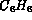
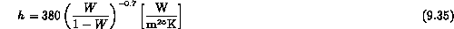

The previous experiments were separate effect tests in which model development was an integral part of the research. There have been other data collected in which direct empirical correlations have resulted or in which analysis is not completed. These relevant experiments are summarized in Table 9.2. We consider both separate effects data and large scale tests.
Separate Effects Experiments
Typically, the heat transfer coefficients have been observed to decrease significantly with increased noncondensable gas mass fraction under various conditions and test geometries. The degradation of heat transfer is caused by the accumulation of a noncondensable gas layer near the cold wall through which the vapor must diffuse.
Buoyancy Forces in a Stagnant Gas Mixture
Cho and Stein (1988) investigated condensation of steam in the presence of air and helium on a small horizontal plate facing down with stagnant flow conditions. The results with air were successfully modelled by taking into account the buoyancy forces caused by different molecular weights of participating gases. Since helium is a lighter gas than steam, a suppression of natural convection was expected. However, the tests with a moderate helium content showed higher heat transfer rates than predicted by a diffusion analysis. A convective heat transfer mechanism caused by fog and mist formation was hypothesized. Fog that formed near the cold surface was observed to form localized swirls and generally move in downward direction. These visual observations seemed to confirm the presence of hypothesized natural circulation. A similar geometrical arrangement was also used by Kroger and Rohsenow (1968). Potassium vapor was condensed in the presence of argon and helium. The diffusion theory successfully predicted the experimental data with helium. In the case of argon, experimental results indicated a superimposed natural circulation flow. Vapor phase instabilities and secondary flow cells were also reported by Spencer, Chang and Moy (1970). They investigated the condensation of Freon-113 in the presence of helium, nitrogen and carbon-dioxide on a vertical surface under stagnant conditions. Both visual observations and heat transfer measurements were performed. The results, indicate a modest effect of noncondensable gas molecular weight. Dehbi (1991) studied the influence of an air/helium noncondensable mixture on the condensation heat transfer under stagnant conditions. The condensing surface consisted of a 3500 mm long vertical copper tube. Helium mass fraction was varied from 1.7 to 8.3 weight percent. Dehbi reported that the heat transfer rates decreased with a increased helium mass fraction. When the helium mass fractions were relatively high, sharp stratification patterns were observed as helium migrated to the top of the test vessel and air/stream mixture stayed at the bottom. The natural convection patterns in all these data suggest that scale dependence must be strongly considered.
Forced Flow
As mentioned previously Dallmeyer (1970) studied condensation of and  on a vertical plate in the presence of air. The results showed that heat transfer rates increased with the Reynolds number and the vapor concentration. Dallmeyer performed detailed measurements of the velocity, temperature and concentration profiles near the wall with laminar and turbulent flow. Measured profiles illustrated the apparent suction effect of the condensation that increases the gradients near the wall and thus leads to higher heat and mass transfer rates in the laminar flow region. Condensation process and, in particular, high condensate mass fluxes were observed to dampen the turbulence level in the turbulent region.
Barry (1987) performed condensation experiments with the mixture of steam and air. His apparatus consisted of a horizontal plate facing upwards. The velocity and mass ratio range was chosen so that it covered the conditions that are likely to exist in a containment during an accident in a developing parallel flow situation. Barry's results show expected the effects of velocity and the mass ratio as mentioned previously. Kutsuna, Inoue and Nakanishi (1987) studied condensation of steam on a horizontal plate (facing up) in the presence of air. They also reported increased heat transfer rates due to forced convection. Their results, indicate the expected effects of noncondensable gas concentration and velocity on the heat transfer coefficients. Tests were performed with higher steam content than the tests by Barry, and consequently, the heat transfer coefficient were also significantly higher. When the tests are performed with a high steam content, the heat transfer results become very sensitive to the air content. This may be the reason why the data scatter is markedly higher than in Barry's experiment. Unfortunately, the experimental uncertainties were not discussed.
Pressure
Several workers have investigated the effect of the system pressure with stagnant flow conditions (no forced convection). The heat transfer rates are reported to increase with system pressure (e.g., Gerstmann, 1964), because the densities of gas components increase with pressure. Cho and Stein (1988) reported that an increase in the system pressure (0.31 MPa to 1.24 MPa) also influenced the mode of condensation on a downward facing surface with helium as the noncondensable gas. Higher pressures led to mixed mode of condensation (filmwise and dropwise condensation coexisting) with a downward facing polished surface.
Nuclear reactor safety evaluations have prompted studies of the effect of pressure on condensation heat transfer under transient conditions (large concentrations of noncondensable gases). Robinson and Windebank (1988) studied the effect of pressure in the range of 0.27-0.62 MPa with an air/stream mixture. The noncondensable gas mass fraction was varied from 24 to 88 percent. The heat transfer rates were measured with a cooled disk that was placed inside a pressure vessel. The results show that heat transfer rates increase with pressure and decrease with the mass ratio of noncondensable gas. Robinson and Windebank noted that the velocity field due to the steam injection might have had an effect on their results. The magnitude of the induced velocities within the vessel were stated to be below 2 , although no detailed measurements were performed.
Similar tests were also conducted by Dehbi. Heat transfer rates were measured at three different pressures (0.15, 0.275 and 0.45 MPa). The noncondensible gas mass fraction in the tests ranged from 25 to 90 percent. The experimental apparatus consisted of a three meter and one half long cooled tube (0.038 m Dia) in a pressure vessel. The motivation behind using a relatively large vertical dimension was to simulate the length scale of internal containment structures. Surprisingly narrow pressure vessel was used (L/D = 10). This led to difficulties to establish homogeneous test conditions in the vessel. In the tests, the mass ratio of air was 8-33 percent greater in the upper part of the vessel than in the lower part. Secondly, the flow field created by the natural convection may have been affected by the sidewalls. Therefore, the results by Dehbi have some unspecified uncertainty. He confirmed the observations of Robinson that heat transfer rate increases with system pressure.
Condensate Film Structure
Several studies have been done to address the effect of condensate film characteristics on the heat transfer rates. The condensate film characteristics depend on its flow field and the nature of the condensing surface, e.g. roughness, wetting and orientation.
Forced flow induces interfacial instabilities that increase the heat transfer rates by reducing the thickness of gas phase laminar sublayer and enhancing the mixing of both the liquid (condensate film) and gas phase. Barry (1987) studied the effects of interfacial structure caused by shear. Since the condensation length was relatively short, a film injection system was used to produce a condensate film that was sufficiently thick for measurements. The qualitative results suggested that enhanced mixing, which is caused by the interfacial film structure, somewhat compensated for the effect of the noncondensable gas.
The surface finish has a major effect on the mode of condensation for a downward facing surface and it is the wetting characteristics of the surface that ultimately determine this. Dropwise condensation is likely to exist on non-wetting surfaces and filmwise condensation is likely on wetting surfaces. In dropwise condensation mode with polished metal surfaces, the heat transfer characteristics are likely to change due to oxidation of the surface or tarnishing. Thus, one cannot precisely know the wetting characteristics as surface aging occurs. Gerstmann and Griffith (1967) studied the condensation of pure, stagnant Freon-113 and water vapor at atmospheric pressure. Heat transfer measurements and visual observations of the interfacial behavior were made. Gerstmann and Griffith observed several distinct flow regimes in the condensate film depending on the angle of inclination. Unstable condensate film with pendant drops and lengthwise ridges existed at the horizontal position. The characteristic length scale of these formations was on the order of the Taylor wavelength. The ridge formation was associated with the presence of a noncondensable gas. When the surface was tilted, the condensate waves developed into "roll waves." The waves were fully developed at about 20 degrees of inclination. The influence of the condensate film on the heat transfer rates was successfully analyzed using an assumption of quasi-steady state with force and energy balance equations. Generally, heat transfer rates were found to decrease with increasing inclination angle. The presence of lengthwise ridge waves induced by noncondensable gas was also reported by Spencer et al. (1970). However, no discussion of the effect of the ridge waves on the heat transfer rates was given.
Integral and Large Scale Experiments
In addition to the heat transfer data, integral and large experiments provide valuable background information about physical conditions such as gas concentrations, temperatures, prevailing flow fields and system pressures in a particular circumstance. The data from the experiments can be used as integral benchmarks for models. In the subject area of condensation these data usually involve the study of condensation in large containment structures for nuclear reactor safety.
The first integral experiments were performed by Jubb and Kolflat (1960). The results of these integral tests were correlated with the experimental parameters. However, some of the parameters that Jubb and Kolflat used were uniquely dependent on the experimental apparatus. Therefore, the resulting correlations were not generally applicable to anything other geometry.
Uchida et al. (1965) and Tagami (1965) performed experiments using a model of a containment structure (3.4 meters dia and 6.4 meters in height). Three water cooled cylinders inside the containment structure were used as test surfaces. Uchida measured the post-blowdown heat transfer rates using a vertical surface with subcooling of C. The dimensions of the test surface were 0.14 by 0.3 meters (width and height). The pressure in the tests varied from 0.1 to 0.3 MPa. The heat transfer rates were reported to decrease with an increasing concentration of noncondensable gas. Contrary to the findings reported in the separate effects section, Uchida et al., reported that the heat transfer rates depend only on the mass ratio and not on the molecular weight of the participating gases, local velocities or pressure. Uchida's and Tagami's results can be correlated in metric units as,
Uchida:

Tagami:
where W is defined as the mass fraction of noncondensable gas. The geometrical aspects and the effect of velocity field were ignored. Therefore, caution should be used to extrapolate results from the correlations for the long sections of structural walls. Unfortunately, it is quoted and used in safety analyses.
The CVTR test series was conducted using a full scale structure of a decommissioned nuclear power plant (Schmitt, 1970). The steam was injected through a diffuser (0.25 meters dia and 3 meters in height) located three meters above the operating floor. Three tests were conducted. The heat transfer rates into the wall were computed from the measured temperature profiles in the wall using the inverse conduction method. The velocity field was measured by ultrasonic anemometers. The experimental data from the CVTR test were used by Kim (1990) as one data set to benchmark his condensation model. The major conclusion from the analysis of these tests was that local gas velocities were needed to accurately predict the data.
Historically, integral tests have been used to find simple correlations that would predict the heat transfer rates. These correlations have gained wide acceptance and are regularly used in safety analyses. In this light, it is surprising to find out that until recently, most of the data from these integral tests have been based on a very limited number of measurements of the prevailing conditions. Therefore, these correlations generally have a very limited value in making accurate predictions of heat transfer rates through different geometries.